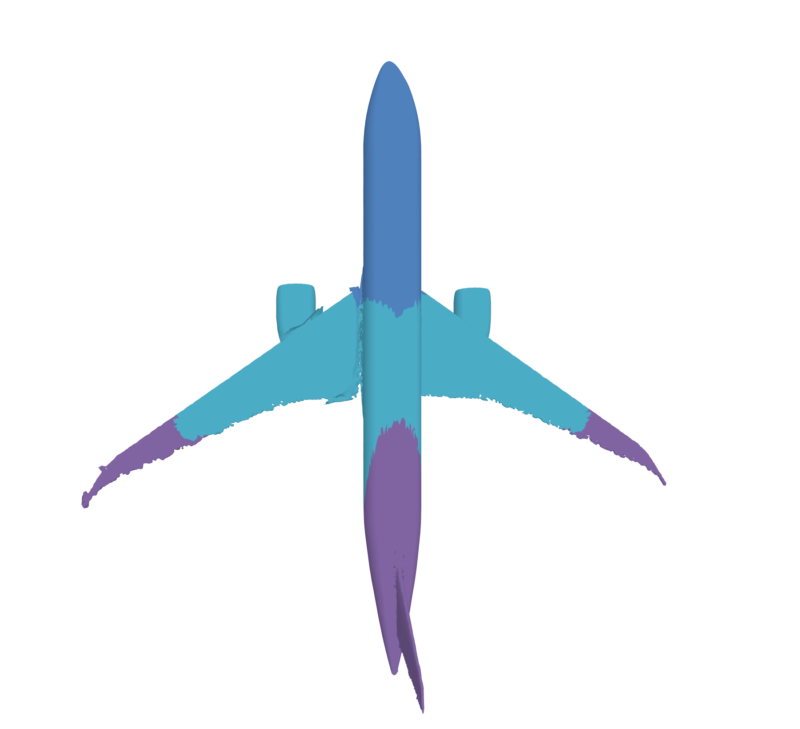
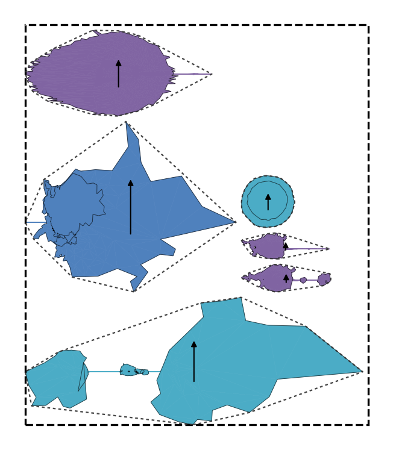
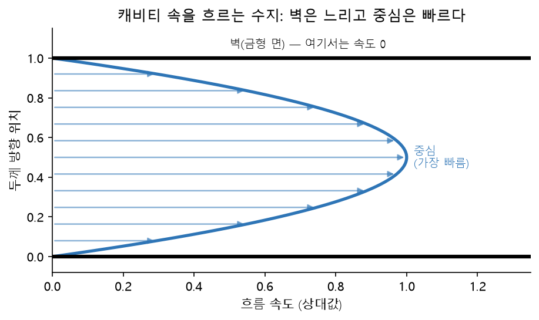
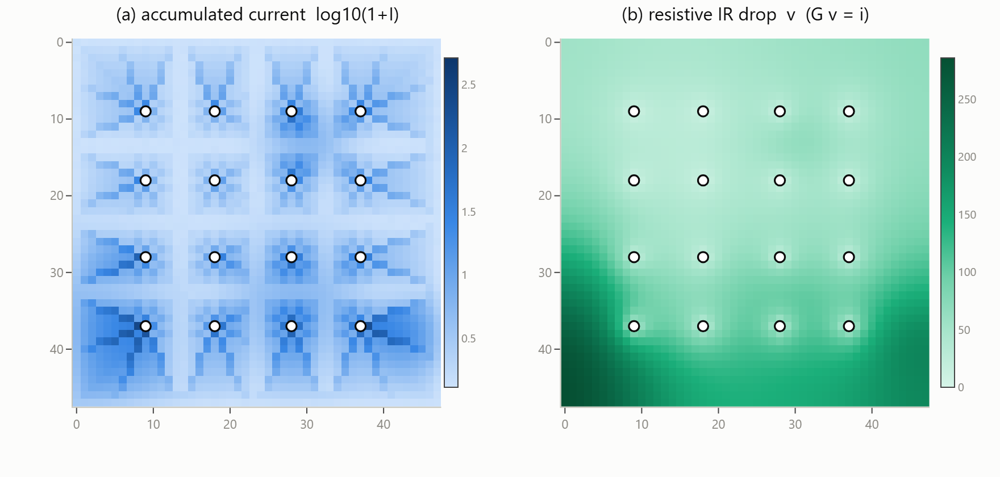
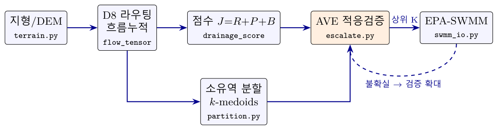

SFTF / PFTF 응용 사례
“흐름을 장부에 합산 → 후보 추천 → 정밀 심판으로 검증” — 3D프린팅 서포트 계산에서 쓰던 이 구조 하나가, 무엇이 어디로 흐르는가만 바꿔 끼우면 복합재·금형·반도체·도시하수까지 그대로 확장됩니다.
먼저 수식 없이 구조만 보는 데모입니다. 공원에서 잃어버린 강아지를 찾을 때, 우리는 단서를 하나씩 따로 보지 않고 지도 한 장 위에 전부 합쳐 놓고 “어디부터 가 볼까”를 정합니다. 그게 바로 위 3단계입니다. 설치 없이 브라우저에서 바로 돌려볼 수 있습니다.
마지막 목격 지점, 발자국 방향, 좋아하는 간식 가게 같은 단서들을 지도(=장부)에 합산합니다. 화면을 읽는 법:
네 사례 모두 코드의 뼈대(장부 누적 → 상위 후보 → 정밀 검증)는 공유하고, “무엇이 흐르는가”와 “비용이 무엇인가”만 다릅니다. 각 카드 아래쪽에 그 교체 항목을 적어 두었습니다.


항공기 동체·주익 외피(좌)를 섬유가 주름 없이 덮이도록 조각으로 분할하고, 각 조각의 평면 재단 패턴(우)을 자동 생성합니다. SFTFCluster의 분할 아이디어를 복합재 성형에 적용한 사례입니다.
평평한 천으로 곡면을 감싸면 반드시 주름이 집니다. 어디를 잘라 몇 조각으로 나눠야 주름이 최소가 되는지 — 그 “잘라야 할 선”을 섬유 흐름의 장부에서 읽어냅니다.
섬유 방향 · 비용 = 주름(전단 변형)
금형 속 수지의 흐름(벽은 느리고 중심은 빠르다)을 장부로 근사해 방향 의존 수축을 예측하고, 금형을 미리 반대로 변형해 치수 오차를 상쇄합니다.
플라스틱은 굳으면서 줄어드는데, 수지가 흘러간 방향과 그 직각 방향의 수축률이 다릅니다. 그래서 시제 금형을 깎고 재고 다시 깎는(cut-and-try) 반복이 필요했는데, 이를 계산으로 대체합니다.
용융 수지 · 비용 = 치수 오차
칩 위 전류의 흐름 누적(좌)과 전압강하(IR-drop) 지도(우)를 값싸게 만들어, 전원 패드·비아 배치 후보를 선별합니다. 정밀 해석 이전의 빠른 스크리닝 단계입니다.
칩 구석까지 전류가 흐르면서 전압이 떨어지면 회로가 오동작합니다. 전원 공급 지점을 어디에 둘지 후보가 수천 가지인데, 전부 정밀 해석하는 대신 누적 지도로 먼저 걸러냅니다.
전류 · 비용 = IR-drop
지형(DEM) 위 빗물의 흐름을 누적해 배수망 뼈대와 소유역 분할 후보를 만들고, 상위 후보만 정밀 수리해석(EPA-SWMM)으로 검증합니다.
그림이 곧 깔때기 구조 그 자체입니다 — 값싼 점수 J로 줄 세우고(왼쪽), 확신이 없으면 검증 범위를 넓히는 되먹임(점선)까지. 다른 세 사례의 내부도 같은 모양입니다.
빗물 · 비용 = 관망 설치·범람네 사례 모두 “무엇이(수지·전류·빗물·섬유) 어디로 흐르는가”만 바꿔 끼우면 같은 장부 엔진이 작동합니다. 바꿔 말하면, 새 분야를 만났을 때 처음부터 만들 필요 없이 흐름의 정의와 비용 함수 두 개만 새로 쓰면 됩니다.
이 밖에도 아래와 같은 파생 연구가 진행 중입니다.